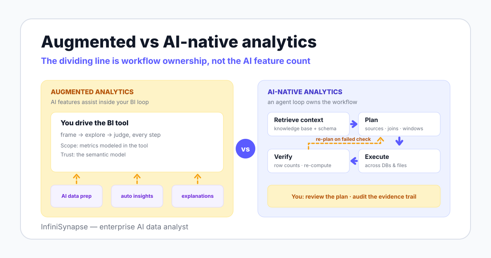

AI-Native vs Augmented Analytics: What Changed in Analytics Architecture
Two terms, one real question: does AI assist your BI workflow, or does an agent own the workflow itself? This guide traces both terms to their sources, appraises each side honestly, and gives you a five-question decision framework — without strawmanning either camp.
AuthorInfiniSynapse Research, product and data architecture team
Published2026-06-11 · Last verified 2026-06-12 · Next review 2026-09-12
Evidence baseGartner category definitions, Microsoft Copilot documentation, agent research (ReAct, BIRD), the EU AI Act, and InfiniSynapse product documentation.
Disclosure: This page is published by InfiniSynapse, which builds an enterprise AI data analyst and therefore sits on the AI-native side of this comparison. To keep the comparison honest, we name the cases where augmented analytics wins outright, the real costs of going AI-native, and the hybrid pattern where you buy neither side a full victory.
TL;DR
The two terms describe different architectures, not different generations of the same thing: augmented analytics puts AI inside a human-driven BI loop; AI-native puts an agent loop in charge of the workflow and the human in review.
Neither side sweeps the board. Augmented features win on incumbent install base, zero new procurement, and known-metric monitoring; AI-native wins on open-ended questions, cross-source execution, and evidence trails — at the cost of a new tool, context seeding, and a governance review.
Most teams should not pick a side at all: the pragmatic 2026 pattern is dashboards for monitoring plus an agent for investigation, sharing one set of metric definitions — the five-question framework below tells you where your weight should sit.
Direct answer: ai-native vs augmented analytics
AI-native and augmented analytics differ in who owns the workflow. Augmented analytics — a Gartner term from 2017 — adds machine learning assistance for data preparation, insight generation, and explanation inside BI tools that a human drives. AI-native analytics is built around an agent loop that retrieves context, plans the analysis, executes across sources, and returns a result with evidence.
Definition
ai-native vs augmented analytics: A comparison between two analytics architectures. Augmented analytics embeds AI assistance inside human-driven BI platforms; AI-native analytics builds the product around an agent loop that plans, executes, and verifies analysis. The practical dividing line is workflow ownership, not the amount of AI on the feature list.

Where the terms come from
Augmented analytics is the older, better-documented term. Gartner coined it in 2017 to describe machine learning and AI features that assist data preparation, insight generation, insight explanation, and data storytelling inside analytics and BI platforms — and the Gartner augmented analytics market category remains the reference list of those vendors in 2026.
The key word in that definition is assist. The analyst still opens the tool, frames the question, and judges the output; the AI accelerates steps inside that human loop.
AI-native is younger and describes a design center rather than a feature set. It draws on the agent definition in Anthropic's Building Effective Agents — systems where the model directs its own process and tool usage — applied to analysis work done by a data agent.
The research behind the agent loop is concrete: the ReAct paper (2022) showed that interleaving reasoning with actions reduces error versus one-shot generation. Two 2025 surveys — LLM/Agent-as-Data-Analyst and A Survey of Data Agents — now treat agent-based analysis as a distinct architecture with its own failure modes.
2017
The year Gartner coined "augmented analytics" — ML/AI features assisting preparation, insight generation, and explanation inside BI tools. Source: Gartner
2022
The ReAct paper formalized the reason-act loop AI-native systems are built on, replacing single-pass generation with stepwise tool use. Source: arXiv 2210.03629
92.96%
Human engineer execution accuracy on the BIRD text-to-SQL benchmark — the trust bar that pushed AI-native designs toward context retrieval and verification instead of raw generation. Source: BIRD
Quick comparison table
Eight dimensions separate the two architectures in practice. Read the "who drives" and "trust mechanism" rows first — they predict the other six.
Dimension
Augmented analytics
AI-native analytics
Origin
Gartner-coined category, 2017
Agent research lineage: ReAct (2022) onward
Design center
The BI platform; AI features attach to it
The agent loop; everything else serves it
Who drives
The human, assisted at each step
The agent executes; the human reviews plan and result
Context model
The BI semantic layer and modeled metrics
Retrieval over a knowledge base plus live schema
Execution
Inside one BI tool's connected sources
Across warehouses, databases, and files in one plan
Question scope
Known metrics: monitor, slice, explain
Open-ended investigation, including unmodeled questions
Trust mechanism
The semantic model constrains what can be said
A verification step plus an evidence trail per answer
Typical buyer
BI owner extending an existing estate
Data team buying an analysis workflow, not a dashboard
The label on the box matters less than one question: in this tool, do you drive while AI assists — or does the agent drive while you review?
Augmented analytics, honestly appraised
Augmented analytics is not the losing side of this page, and treating it as a strawman would misread the market. For three buyer situations it is simply the correct answer.
Where augmented genuinely wins
Incumbent install base: the features arrive inside BI tools your company already licenses, trains on, and trusts
Zero new procurement: no vendor review, no new security assessment, no migration — often just a license tier
Known-metric monitoring: anomaly flags, automated explanations, and data storytelling on metrics you already model
Governed vocabulary: the semantic layer limits the AI to defined metrics, which caps hallucination risk
Where it runs out of road
Questions outside the semantic model return "metric not found," not analysis
Cross-source questions need an ETL project before the AI can help
The human loop stays the bottleneck: assistance speeds steps, not the backlog
Explanations describe a chart; they rarely carry a query-level evidence trail
If your team is satisfied with its dashboards and most questions are variations on known metrics, augmented features are the rational upgrade. Buy them, and skip the rest of this page without guilt.
AI-native, honestly appraised
The AI-native case rests on the question types augmented tools structurally cannot reach. It also carries real costs that vendors — including us — should say out loud.
Where AI-native wins
Open-ended questions: "why did repeat purchases drop?" needs planned, multi-step analysis, not a pre-modeled metric
Cross-source execution: InfiniSynapse, for example, joins JD and Tmall platform data with a CSV by phone number in one run, no ETL first
Evidence trails: every answer ships with its plan, queries, and sources, so a reviewer can reconstruct it
Deployment control: private cloud, on-premises, or air-gapped where data cannot leave your boundary
The real costs
A new tool to procure, secure, and learn — augmented's zero-procurement advantage inverted
Context seeding is real work: metric definitions, dictionaries, and playbooks must be written down, measured in weeks
An agent that executes across sources triggers a governance review chat features never did
Immature category: vendor claims vary widely, so pilot on questions whose answers you already know
The architecture that makes the left column possible — context, planning, execution, tool, and governance layers — is the subject of our AI-native data platform guide. The evidence-trail half of the trust argument is covered in explainable AI data analysis.
The convergence question: will augmented tools become agents?
The likeliest objection to this whole comparison: BI vendors are adding agentic features fast, so won't the categories merge? Partly — and the copilot pattern shows both the path and its limit.
Microsoft 365 Copilot is the canonical embedded-assistance design: AI inside the applications people already use, accelerating work the human still owns. It is excellent at that job, and it is not an analysis agent — a distinction we map feature by feature in data agent vs AI copilot.
Retrofitting a full agent loop into a dashboard-centered product is harder than adding a chat panel: it requires a context retrieval layer, governed multi-source execution, and verification — load-bearing architecture, not features. Some vendors will rebuild; others will rename.
Your defense as a buyer is to test behavior, not labels. Ask any "agentic" release to plan and execute one question outside its semantic model, across two sources, and show the evidence trail.
Decision framework: five questions
Score yourself honestly on these five questions. They matter more than any vendor's category slide, including ours.
Question
Points toward augmented
Points toward AI-native
1. How satisfied are you with your current BI?
Dashboards work; users mostly want them faster and smarter
The analyst backlog of unanswered "why" questions keeps growing
2. How open-ended are your questions?
Mostly variations on metrics you already model
Frequent investigations nobody pre-built a dashboard for
3. How spread out are your sources?
One warehouse holds nearly everything
Answers routinely need two databases plus files or documents
4. What do your governance needs look like?
Standard BI permissions are enough
You need per-answer evidence trails and private or air-gapped deployment
5. What capacity does your team have?
No bandwidth to seed and maintain a knowledge base this quarter
Someone can own metric definitions and context seeding for a few weeks
Four or five answers in one column is a clear call. A split of two or three — the most common result we see — means you want the hybrid below, not a winner.
Both can coexist: the pragmatic hybrid
The framing "vs" suggests a replacement decision, and for most teams that is the wrong frame. Dashboards and agents answer different question types, so the working pattern is a division of labor.
Keep BI dashboards — augmented features included — for monitoring known metrics on a schedule. Route investigation to the agent: anything open-ended, anything spanning sources, anything that needs an evidence trail a reviewer can audit.
Two rules keep the hybrid healthy. Both systems must share one set of metric definitions, and both should run on scoped, read-only credentials — the same governance hygiene the NIST AI Risk Management Framework formalizes as govern, map, measure, manage.
Regulation pushes the same direction: with the EU AI Act in force since 2024-08-01 and obligations phasing in through 2026-2027, reviewable analysis workflows are becoming a compliance asset rather than a nice-to-have. The workflow-level version of this shift is mapped in agentic analytics explained.
Test the dividing line on your own data
Ask one question your dashboards were never built for — cross-source, open-ended — and watch the plan, execution, chart, and evidence trail. If an augmented tool you already own can do the same, keep your money.
What is the difference between AI-native and augmented analytics?
The difference is architectural. Augmented analytics — a term Gartner coined in 2017 — adds machine learning features such as data preparation, insight generation, and natural-language explanation inside an analytics tool a human still drives. AI-native analytics is designed around an agent loop from the start: the system retrieves context, plans an analysis, executes across sources, and returns a result with evidence.
What does Gartner mean by augmented analytics?
Gartner uses augmented analytics for machine learning and AI capabilities that assist data preparation, insight generation, and insight explanation inside analytics and BI platforms. Gartner coined the term in 2017, and its market category page now lists most established BI vendors. The defining trait is assistance: the features accelerate a workflow that remains dashboard-centered and human-driven.
Is AI-native analytics replacing augmented analytics?
No — the honest answer is that they serve different question types. Augmented features make known-metric monitoring inside an existing BI estate faster and more accessible. AI-native platforms take the open-ended, cross-source investigations that dashboards were never built for. Many data teams run both, and retiring a working BI deployment just to adopt an agent is usually a mistake.
Is Microsoft 365 Copilot augmented analytics or AI-native?
Microsoft 365 Copilot follows the copilot pattern: AI assistance embedded inside existing applications, which sits closer to augmented analytics than to AI-native architecture. It accelerates work in its host tools rather than owning an analysis workflow end to end. That is a design choice, not a flaw — but the human still drives, and the workflow stays inside the host application.
Can augmented analytics tools evolve into agents?
Some will, and BI vendors are moving that way by adding planning steps and tool calls to what began as chat features. The hard part is architectural: an agent loop needs a context layer, governed multi-source execution, and verification, which are difficult to retrofit into a dashboard-centered product. Judge each release by what it executes and what evidence it returns, not by the label.
Which should a team without an existing BI investment choose?
With no sunk BI cost, decide by question type. If you mostly need recurring metric monitoring, a classic BI tool with augmented features remains the cheaper, simpler start. If your questions are open-ended and span databases and files, starting AI-native avoids building a dashboard estate you would soon route around. Many small teams pilot an agent on read-only credentials first.
Can augmented and AI-native analytics run side by side?
Yes, and that hybrid is the pragmatic default in 2026: keep BI dashboards for monitoring known metrics, and route investigation work — why a metric moved, anything spanning several sources — to the agent. Both should share one set of metric definitions and read-only credentials. The pattern breaks mainly when teams maintain duplicate definitions in the two systems instead of one shared source.
Methodology and review notes
Last updated: 2026-06-12 · Next scheduled review: 2026-09-12
Category definitions come from Gartner's augmented analytics market page and Microsoft's Copilot documentation; the agent-architecture side rests on published research (ReAct, the 2025 data agent surveys), the BIRD benchmark, and governance frameworks (NIST AI RMF, the EU AI Act). InfiniSynapse capabilities cited here come from product documentation; the cross-source example is a documented product demonstration, not an independent benchmark.
Conflict of interest: InfiniSynapse publishes this guide and sells on the AI-native side of the comparison. To reduce bias, the page names where augmented analytics wins outright, lists the real costs of going AI-native, and recommends a hybrid rather than a replacement for most teams.
Update cadence: Reviewed every 90 days for terminology, source links, regulatory dates, and schema consistency.